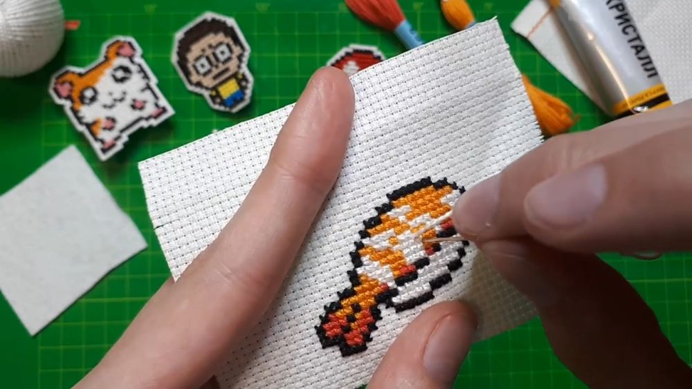

Зачем нужны значки
Значки — одни из самых популярных молодежных аксессуаров. Каждое такое изделие таит в себе некую информацию о своем хозяине. Значок может рассказать о личных увлечениях, ценностях, музыкальных предпочтениях или отношении к жизни.
Материалы для сегодняшней работы:
- Нитки мулине
- Иголка
- Клей "Кристал" или любой другой клей наподобие "Момент"
- Клей пистолет (необязательно)
- Клей ПВА или зажигалка (для закрепления краев)
- Канва плотная в мелкую клетку
- Фетр
- Крепление значка
Для начала надо понять, как закрепить нить в работе. Обычным узелком не следует, т.к. это не надежно для такой работы, к тому же может мешать во время вышивания и самое главное - задник работы будет кривой.
Закрепление нити в начале работы
1 способ
Нить пропускаем под 3-5 ближайшими уже вышитыми крестиками на изнаночной стороне. Для лучшего закрепления нить оборачивается вокруг нескольких стежков.
2 способ
Игла вводится в канву в одном углу будущего «крестика» и выводится через несколько «квадратов» в противоположном углу другого «крестика». Получится небольшая протяжка нити с изнанки. При этом не вытягивайте нить полностью под канву, оставьте примерно столько сантиметров, чтобы потом можно было эту нить накрыть стяжками. Далее вышивайте полукрестики в одну сторону (или же сразу крестики целиком). В результате получится закрепление нити под стежками с изнанки.
Закрепление нити в конце работы
1 способ
Закрепить нить в конце можно также как во 2-м способе закрепления ее в начале, т.е. просунуть иглу через последовательность стежков с изнаночной стороны. (Кстати, в такой же технике можно и закрепить новую нить в работе.)
2 способ
«Змейка» - нить закрепляем под вышитыми вертикальными стежками на изнаночной стороне (контрастная нить выбрана для наглядности)
Далее нужна картинка для вышивки значка, как правило, это небольшое пиксельное изображение. Это может быть что угодно:

Подготовив эскиз для вышивания, отрежьте кусочек от канвы немного больше (на 4-6 клеточек). Это нужно для того, чтобы было удобнее вышивать, держа работу в руках, а так же это предотвратит возможный брак краев работы, т.к. они могут начать расслаиваться.
Когда работа готова, вырежьте ее по периметру на 1 клеточку больше.
Далее вышитый значок надо приклеить на основу - фетр, предварительно смазав клеем изнаночную часть работы и сам фетр, для лучшего скрепления. Подождать полного высыхания клея. При желании, на этом же этапе можно обнести края работы клеем ПВА, чтобы они не растрепались.
Когда клей полностью высох и работа надежна скреплена с основой, на новую изнанку надо приклеить крепление.
Значок готов.
olga_goida
САЙТ ЛЮТЫЙ МАСТХЕВ